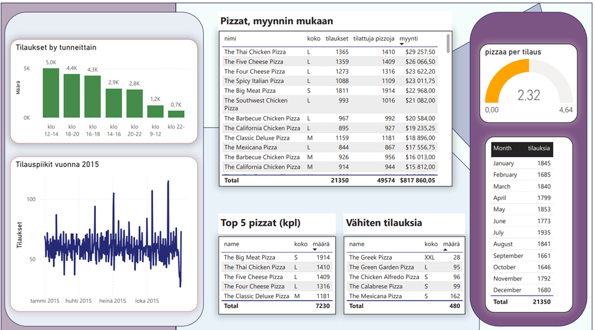

Power Bi-Projekti: Pizzerian liiketoiminnan seuraaminen
Tämän projektin tarkoituksena on analysoida kuvitteellisen pizzerian liiketoimintaa. Analyysin kohteena on keskeiset liiketoiminnan osa-alueet ja tunnuslukujen selvittäminen, kuten myynti, ruuhkapiikit ja mahdolliset liiketoiminnan pullonkaulat. Analyysin pohjana olivat seuraavat kysymykset:
- Kuinka monta asiakasta meillä on joka päivä? Onko olemassa päivittäisiä asiakaspiikkejä?
- Kuinka monta pizzaa tilauksessa yleensä on? Onko meillä mitään myyntihittejä?
- Kuinka paljon rahaa teimme tänä vuonna? Voimmeko tunnistaa myynnissä jonkinlaista kausivaihtelua?
- Onko joitain pizzoja, jotka olisi hyvä poistaa valikoimasta, tai mitä tahansa tarjouksia, joita voisimme hyödyntää?
Analyysissa käytettiin lähdetiedostona neljää CSV-tiedostoa (Free Data Sets & Dataset Samples | Maven Analytics), joita analysoitiin Power BI:ssä. Analyysi kävi läpi kolme perusvaihetta: Power queryssä suoritettu taulujen/datan käsittely analyysia varten, taulujen yhteyksien läpikäynti/tarkastaminen ja varsinainen analyysi ja tulosten visualisointi.
Projektin keskeiset osaamistavoitteet ja taidot:
#power query (datan siistiminen, sarakkeiden määrittely segmentointia varten)
#taulujen yhteyksien määrittely
# analyysi ja visualisointi
# mittarit
Projektin tarkoituksena oli luonnollisesti vastata projektin kannalta olellisiin kysymyksiin. Päivittäisiä tilauspiikkejä (tilaukset tunneittain) varten loin Power queryn avulla erillisen luokittelevan sarakkeen, jonka avulla sain jaettua vuorokauden tunnit eri segmentteihin. Myyntiä varten käytin SUM (kk-myynti) ja SUMX-funktiota (Pizzat, myynnin mukaan) luodakseni mittarin kokonaismyynnin laskemiseksi. Muutoin projektin toteuttaminen onnistui taulukoinneilla, pylväsdiagrammi- ja viivadiagrammivisualisoinneilla.
Analyysin tulokset:
1. Ensimmäiseen kysymykseen vastasin luomalla taulukon, josta käy ilmi päivittäiset myynnit kuukausittain. Päivittäiset ruuhkapiikit sijoittuvat selkeästi lounasaikaan klo 12-14 välille sekä klo 16-20 väliselle ajalle, joilloin ihmiset pääsevät töistä ja haluavat jotain nopeaa ja hyvää päivälliseksi.
2. Keskimäärin asiakas tilaa noin 2,3 pizzaa per tilaus. Tilausten perusteella useammat tilaukset kuitenkin sisältävät yhden pitsan, kun taas tietty osa kaksi, ja toisinaan jopa kolme-neljä pitsaa per tilaus, mikä hilaa tilauskeskiarvoa ylöspäin. Myyntihitit valikoimassa ovat selkeästi ’TheBig Meat Pizza’, jota on myyty vuoden aikana 1914 kappaletta. Seuraavina myydyimpien joukossa ovat ’The Thai Chicken Pizza' ja ’The Five Cheese Pizza’, joita myydään 1410 ja 1409 kappaletta. Samalla kaksi viimeisintä pizzaa ovat ravintolan tuottoisimpia myyntivaltteja. Huomioitavaa on myös se, että asiakkaat suosivat L-koon pitsoja myynnin mukaan tarkastellessa. Ainoa poikkeus on ’TheBig Meat Pizza’, jota ostetaan s-koossa.
3. Pitsoista kertynyt myynnillinen tuotto oli vuoden aikana 817 860 $, tilauksia tehtiin 21350, ja pitsoja tilattiin 49574 kappaletta. Myynnillistä kausivaihtelua seuratessa näemme pienoista kasvua heinäkuussa (tilauksia 1935) sekä tammi-, maalis- ja toukokuussa (noin 1850 tilausta per kk). Varsinaisia myyntipiikkejä on havaittavissa heinäkuun 3-4.pvänä, jolloin juhlitaan itsenäisyyspäivää (pitseria on amerikkalainen, otaksun siis). Muita piikkejä on helmikuun 1.pvä, toukokuun 15.pvä, lokakuun 15. ja marraskuun 27.pvä.
4. Heikoiten myyvä pizza on kreikkalainen xxl-pitsa, jonka myynti jää selvästi parhaista jälkeen. Huomioitavaa tässäkin on pitsojen koko, ne ovat xxl/s-kokoa. Kuten huomasimme, asiakkaat suosivat l-koon pitsoja. Tämän ja muiden huonoimmin myyvien pitsojen suhteen voikin miettiä, onko niitä tärkeää pitää listalla vai olisiko syytä markkinoida niitä enemmän esimerkiksi kampanjan turvin.